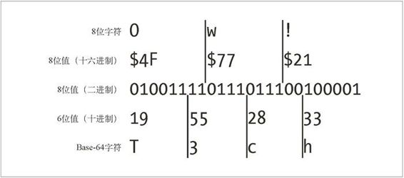

E.2 8位到6位
Base-64 编码将一个 8 位字节序列拆散为 6 位的片段，并为每个 6 位的片段分配一个字符，这个字符是 Base-64 字母表中的 64 个字符之一。这 64 个输出字符都是很常见的，可以安全地放在 HTTP 首部字段中。这 64 个字符中包含大小写字母、数字、+ 和 /，还使用了特殊字符 =。表 E-1 显示了 Base-64 的字母表。
注意，由于 Base-64 编码用了 8 位字符来表示信息中的 6 个位，所以 Base-64 编码字符串大约比原始值扩大了 33%。
表E-1 Base-64字母表
| 0 | A | 8 | I | 16 | Q | 24 | Y | 32 | g | 40 | o | 48 | w | 56 | 4 |
| 1 | B | 9 | J | 17 | R | 25 | Z | 33 | h | 41 | p | 49 | x | 57 | 5 |
| 2 | C | 10 | K | 18 | S | 26 | a | 34 | i | 42 | q | 50 | y | 58 | 6 |
| 3 | D | 11 | L | 19 | T | 27 | b | 35 | j | 43 | r | 51 | z | 59 | 7 |
| 4 | E | 12 | M | 20 | U | 28 | c | 36 | k | 44 | s | 52 | 0 | 60 | 8 |
| 5 | F | 13 | N | 21 | V | 29 | d | 37 | l | 45 | t | 53 | 1 | 61 | 9 |
| 6 | G | 14 | O | 22 | W | 30 | e | 38 | m | 46 | u | 54 | 2 | 62 | + |
| 7 | H | 15 | P | 23 | X | 31 | f | 39 | n | 47 | v | 55 | 3 | 63 | / |
图 E-1 是一个简单的 Base-64 编码实例。在这里，三个字符组成的输入值“Ow!”是 Base-64 编码的，得到的是 4 个字符的 Base-64 编码值“T3ch”。它是按以下方式工作的。

图 E-1 Base-64 编码实例
字符串“Ow!”被拆分成 3 个 8 位的字节（0x4F、0x77、0x21）。
这 3 个字节构成了一个 24 位的二进制值 010011110111011100100001。
这些位被划分为一些 6 位的序列 010011、110111、01110、100001。
每个 6 位值都表示了从 0 ～ 63 之间的一个数字，对应 Base-64 字母表中 64 个字符之一。得到的 Base-64 编码字符串是个 4 字符的字符串“T3ch”，然后就可以通过线路将这个字符串作为“安全的”8 位字符传送出去，因为只用了一些移植性最好的字符（字母、数字等）。